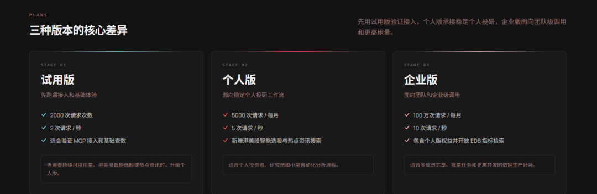
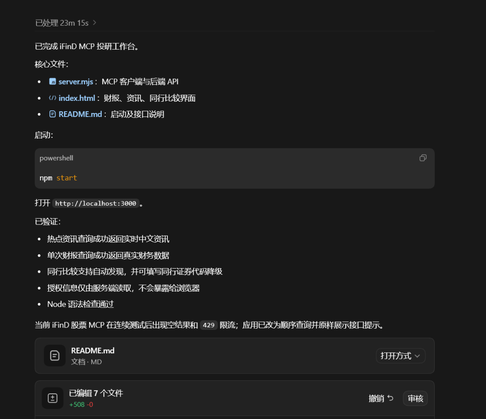
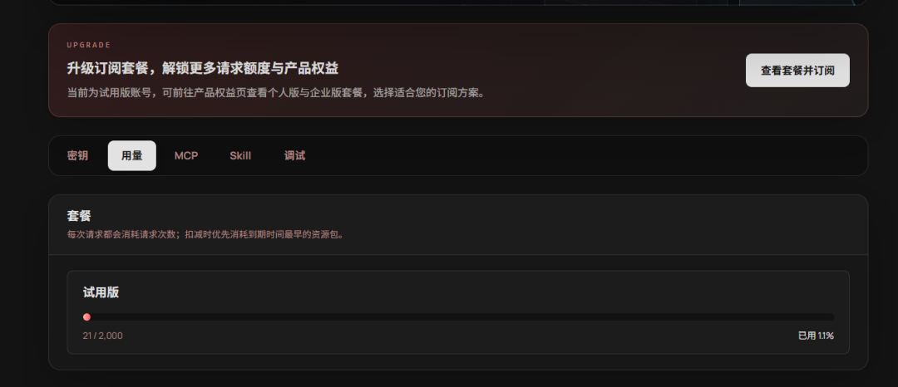
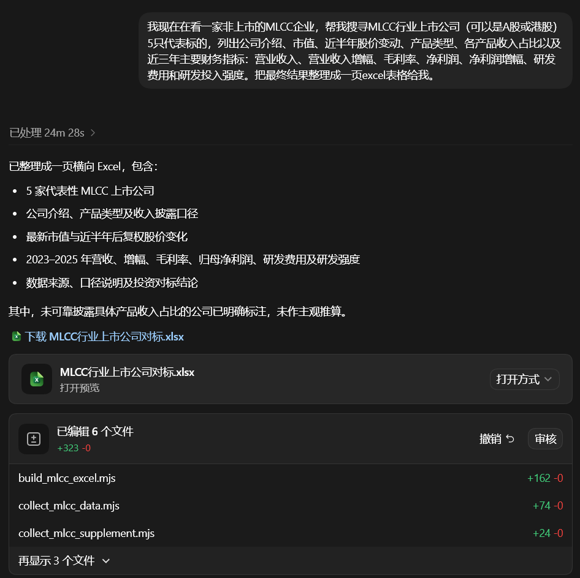
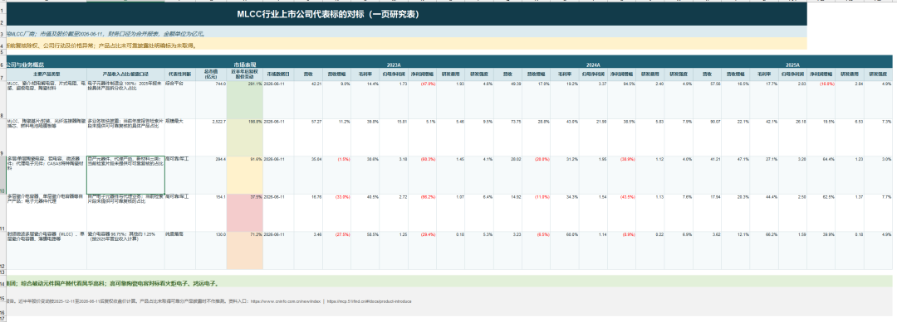

上周，同花顺官方发布了一篇介绍 iFinD MCP 的文章：复制粘贴财报数据？那是 AI 该干的事。
文章介绍，iFinD MCP 是同花顺投研级数据库的 MCP 化接口，能够实现：
- 覆盖 A 股、公募、宏观、债券、港美股、指数、板块及公告资讯等全品类数据
- 同花顺级别的数据质量和机构级别的数据底层
- 专为 AI 智能体设计，支持自然语言调用
刚好我手上有一个同行业上市公司对比任务，于是就试试看能不能用上。
一、注册登录，获取密钥和 MCP 配置
直接在 iFinD MCP 官网注册并登录。
从服务介绍来看，个人试用版支持 2,000 次调用；个人付费版 40 元/月，多了智能选基、港美股智能选股和热门事件资讯搜索等功能。要知道公司要是订阅同花顺账号那得是大千上万一个账号的，现在部分功能可以免费使用？那不是赛博菩萨嘛，薅之。
我要做的财务数据收集，试用版已经能够覆盖。
注册完成后，个人中心里会提供 MCP 配置和 Skill 下载。我用的是 Codex，能够支持 MCP，因此直接调用 MCP 就好；如果是 Claw 类工具，可以用 Skill 调用。

文档读不懂，搞不清 Skill 和 MCP 怎么用？没关系，把 AI 需要的东西丢给它学习，让它配置就好。
直接把下面的 Prompt 丢给 Agent，再把 <粘贴 iFinD 个人中心获取的 MCP 配置> 换成自己的配置：
阅读 iFinD MCP 产品介绍：
https://mcp.51ifind.cn/#/docs/product-introduce，
学习接口用法，帮我实现财报数据获取、热点资讯追踪和同行业比较等功能。这是 MCP 配置：
<粘贴 iFinD 个人中心获取的 MCP 配置>然后 Codex 就自己调试并编写调用脚本了。
自动配置时，Codex 发现 MCP 限制了并发调用，不确定是否与试用版有关，因此只能逐个查询股票，当然 Codex 自己会调整调用脚本。
由于 Prompt 没写清楚，Codex 直接给了我一个带前端的工具台。也没关系，跑通了就行，下次可以在 Prompt 中指明不需要前端页面。

Codex 配置完成并测试基本功能，一共花了 21 次调用。说明基本功能没问题，接下来该让 Agent 上场干活了。

二、用一个高难度任务测试
因为用的是 Codex，我直接让它搞一个高难度项目：
我现在在看一家非上市的 MLCC 企业，帮我搜寻 MLCC 行业上市公司（可以是 A 股或港股）5 只代表标的，列出公司介绍、市值、近半年股价变动、产品类型、各产品收入占比以及近三年主要财务指标：营业收入、营业收入增幅、毛利率、净利润、净利润增幅、研发费用和研发投入强度。把最终结果整理成一页 Excel 表格给我。这个任务集合了公司业务信息收集、市场数据获取、财务数据获取、指标计算和 Excel 输出。
其中，收入结构拆分并不是标准的结构化财报数据，Agent 需要从年报中提取，整体算是一个比较复杂的综合任务。
历时 24 分 28 秒，Codex 输出了一个大致符合要求的 Excel。财报数据基本拿齐，但部分公司的收入结构没有找到，返回的结论是："产品占比未取得可靠分产品披露时不作推测。"


回到网页查看，一共发生了 49 次调用。也就是说，5 只股票的数据收集与整理不到 30 次调用。
按照这个消耗量，试用版每月 2,000 次调用，基本能满足 200 只以上个股的同等量数据查询，还算比较慷慨。
当然，如果是严肃交付项目，AI 获取的数据不能直接采用。还可以结合我之前做的财报下载 Skill，让 AI 下载财报然后做一次复核，再不放心可以再做一次人工复核。一句话批量下载上市公司定期报告的 skill
到这里，获取行业上市公司财报数据，甚至年报内容的流程，算是跑通了。
三、MCP + 个人工作流 = 可复用 Skill
综合来看，试用账号基本够轻量使用，中度使用可以考虑 40 元的月费套餐。
借助这波各类 Claw / Agent 热潮，对同花顺来说，这确实是一个不错的个人用户增量入口。
当然，千人千面，大家可以根据自己需求配合 MCP 创造各种 Skill，我能想到的：
- 个人选股助理：配合开源的热点新闻推送项目，分析利好消息，选股并摘取数据，再整理成分析报告。
- 盯盘助手：配合 Cron 和即时通讯工具，定时推送热点或个股消息。
- 可复用的同行业数据对比工具：把对比公司和财务指标需求整理成 Skill，每季度直接调用取数并整理。
还能怎么用，那就看大家的想象力和创造力了。